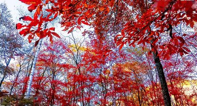
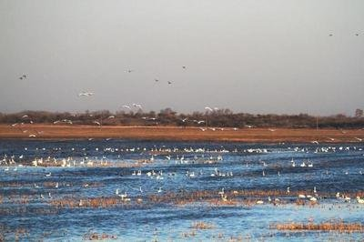
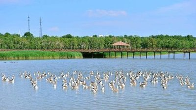

红叶谷
红叶谷是吉林著名的乡村景点，每到秋季，枫叶如火，美不胜收。
红叶谷最佳观赏时间通常在 9 月下旬到 10 月中旬。此时，整个山谷被五彩斑斓的枫叶所覆盖，仿佛一幅绚丽的画卷。
更多红叶谷信息
- 周边美食推荐：当地的农家菜，特别是山野菜和土鸡汤，味道鲜美。
- 住宿选择：有温馨的民宿和舒适的酒店可供选择。
向海
这里有大片的湿地和珍稀鸟类，自然风光独特。
向海是国家级自然保护区，拥有丰富的生态资源。每年春季和秋季，是观鸟的最佳时节，能看到各种珍稀鸟类在此栖息繁衍。
更多向海信息
- 特色活动：可以参加湿地徒步活动，亲近大自然。
- 购物推荐：当地的手工艺品，如芦苇编制品，具有独特的艺术价值。
查干湖
冬季的查干湖冬捕是一大特色，同时还能品尝到新鲜美味的湖鱼。
查干湖冬捕历史悠久，场面壮观。每年 12 月中旬到次年 1 月中旬，是冬捕的旺季。
更多查干湖信息
- 交通指南：可以选择自驾或者乘坐公共交通工具前往。
- 注意事项：冬季气温较低，注意保暖和防滑。